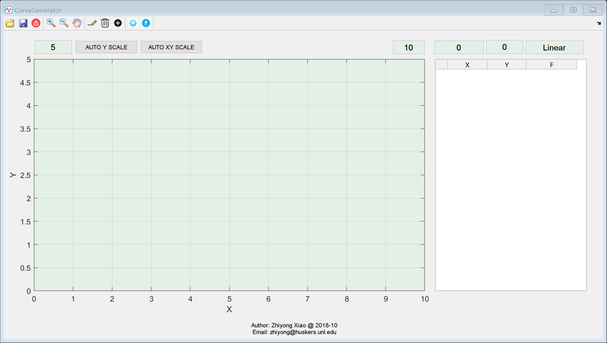

function varargout = CurveGenerate(varargin) % CURVEGENERATE MATLAB code for CurveGenerate.fig % CURVEGENERATE, by itself, creates a new CURVEGENERATE or raises the existing % singleton*. % % H = CURVEGENERATE returns the handle to a new CURVEGENERATE or the handle to % the existing singleton*. % % CURVEGENERATE('CALLBACK',hObject,eventData,handles,...) calls the local % function named CALLBACK in CURVEGENERATE.M with the given input arguments. % % CURVEGENERATE('Property','Value',...) creates a new CURVEGENERATE or raises the % existing singleton*. Starting from the left, property value pairs are % applied to the GUI before CurveGenerate_OpeningFcn gets called. An % unrecognized property name or invalid value makes property application % stop. All inputs are passed to CurveGenerate_OpeningFcn via varargin. % % *See GUI Options on GUIDE's Tools menu. Choose "GUI allows only one % instance to run (singleton)". % % See also: GUIDE, GUIDATA, GUIHANDLES % Edit the above text to modify the response to help CurveGenerate % Last Modified by GUIDE v2.5 23-Sep-2018 13:50:46 % Begin initialization code - DO NOT EDIT gui_Singleton = 1; gui_State = struct('gui_Name', mfilename, ... 'gui_Singleton', gui_Singleton, ... 'gui_OpeningFcn', @CurveGenerate_OpeningFcn, ... 'gui_OutputFcn', @CurveGenerate_OutputFcn, ... 'gui_LayoutFcn', [] , ... 'gui_Callback', []); if nargin && ischar(varargin{1}) gui_State.gui_Callback = str2func(varargin{1}); end if nargout [varargout{1:nargout}] = gui_mainfcn(gui_State, varargin{:}); else gui_mainfcn(gui_State, varargin{:}); end % End initialization code - DO NOT EDIT % --- Executes just before CurveGenerate is made visible. function CurveGenerate_OpeningFcn(hObject, eventdata, handles, varargin) % This function has no output args, see OutputFcn. % hObject handle to figure % eventdata reserved - to be defined in a future version of MATLAB % handles structure with handles and user data (see GUIDATA) % varargin command line arguments to CurveGenerate (see VARARGIN) % Choose default command line output for CurveGenerate handles.output = hObject; % Update handles structure xlim([0 str2num(get(handles.e_Xmax,'String'))]); ylim([0 str2num(get(handles.e_Ymax,'String'))]); warning('off','MATLAB:HandleGraphics:ObsoletedProperty:JavaFrame'); jFrame=get(handle(handles.figure1), 'javaframe'); jicon=javax.swing.ImageIcon('smart.png'); jFrame.setFigureIcon(jicon); handles.lineIndex = 1; handles.pen_drawing = 0; guidata(hObject, handles); % UIWAIT makes CurveGenerate wait for user response (see UIRESUME) % uiwait(handles.figure1); % --- Outputs from this function are returned to the command line. function varargout = CurveGenerate_OutputFcn(hObject, eventdata, handles) % varargout cell array for returning output args (see VARARGOUT); % hObject handle to figure % eventdata reserved - to be defined in a future version of MATLAB % handles structure with handles and user data (see GUIDATA) % Get default command line output from handles structure varargout{1} = handles.output; % --- Executes during object creation, after setting all properties. function axes_main_CreateFcn(hObject, eventdata, handles) % hObject handle to axes_main (see GCBO) % eventdata reserved - to be defined in a future version of MATLAB % handles empty - handles not created until after all CreateFcns called % Hint: place code in OpeningFcn to populate axes_main xlabel('X'); ylabel('Y'); grid on; %set(gcf, 'WindowButtonMotionFcn', @mouseMove); %title(gca, ['(X,Y) = (', num2str(C(1,1)), ', ',num2str(C(1,2)), ')']); function e_X_Callback(hObject, eventdata, handles) % hObject handle to e_X (see GCBO) % eventdata reserved - to be defined in a future version of MATLAB % handles structure with handles and user data (see GUIDATA) % Hints: get(hObject,'String') returns contents of e_X as text % str2double(get(hObject,'String')) returns contents of e_X as a double % --- Executes during object creation, after setting all properties. function e_X_CreateFcn(hObject, eventdata, handles) % hObject handle to e_X (see GCBO) % eventdata reserved - to be defined in a future version of MATLAB % handles empty - handles not created until after all CreateFcns called % Hint: edit controls usually have a white background on Windows. % See ISPC and COMPUTER. if ispc && isequal(get(hObject,'BackgroundColor'), get(0,'defaultUicontrolBackgroundColor')) set(hObject,'BackgroundColor','white'); end function e_Y_Callback(hObject, eventdata, handles) % hObject handle to e_Y (see GCBO) % eventdata reserved - to be defined in a future version of MATLAB % handles structure with handles and user data (see GUIDATA) % Hints: get(hObject,'String') returns contents of e_Y as text % str2double(get(hObject,'String')) returns contents of e_Y as a double % --- Executes during object creation, after setting all properties. function e_Y_CreateFcn(hObject, eventdata, handles) % hObject handle to e_Y (see GCBO) % eventdata reserved - to be defined in a future version of MATLAB % handles empty - handles not created until after all CreateFcns called % Hint: edit controls usually have a white background on Windows. % See ISPC and COMPUTER. if ispc && isequal(get(hObject,'BackgroundColor'), get(0,'defaultUicontrolBackgroundColor')) set(hObject,'BackgroundColor','white'); end % --- Executes on selection change in pop_F. function pop_F_Callback(hObject, eventdata, handles) % hObject handle to pop_F (see GCBO) % eventdata reserved - to be defined in a future version of MATLAB % handles structure with handles and user data (see GUIDATA) % Hints: contents = cellstr(get(hObject,'String')) returns pop_F contents as cell array % contents{get(hObject,'Value')} returns selected item from pop_F % --- Executes during object creation, after setting all properties. function pop_F_CreateFcn(hObject, eventdata, handles) % hObject handle to pop_F (see GCBO) % eventdata reserved - to be defined in a future version of MATLAB % handles empty - handles not created until after all CreateFcns called % Hint: popupmenu controls usually have a white background on Windows. % See ISPC and COMPUTER. if ispc && isequal(get(hObject,'BackgroundColor'), get(0,'defaultUicontrolBackgroundColor')) set(hObject,'BackgroundColor','white'); end % --- Executes during object creation, after setting all properties. function table_XY_CreateFcn(hObject, eventdata, handles) % hObject handle to table_XY (see GCBO) % eventdata reserved - to be defined in a future version of MATLAB % handles empty - handles not created until after all CreateFcns called set(hObject,'Data',[]); % --- Executes on mouse motion over figure - except title and menu. function figure1_WindowButtonMotionFcn(hObject, eventdata, handles) % hObject handle to figure1 (see GCBO) % eventdata reserved - to be defined in a future version of MATLAB % handles structure with handles and user data (see GUIDATA) % C = get (gca, 'CurrentPoint'); % set(handles.e_X,'String',num2str(C(1,1),'%.2f')); % set(handles.e_Y,'String',num2str(C(1,2),'%.2f')); % --- Executes on mouse press over axes background. function axes_main_ButtonDownFcn(hObject, eventdata, handles) % hObject handle to axes_main (see GCBO) % eventdata reserved - to be defined in a future version of MATLAB % handles structure with handles and user data (see GUIDATA) pen_drawing = handles.pen_drawing; type = get(gcf,'SelectionType'); if pen_drawing == 1 if strcmp(type,'normal') axes(handles.axes_main);hold on; X = str2num(get(handles.e_X,'String')); Y = str2num(get(handles.e_Y,'String')); try preX = handles.preX; preY = handles.preY; catch preX = 0; preY = 0; end if X >= preX handles.preX = X; handles.preY = Y; handles.pointTable{handles.lineIndex,1} = X; formular = get(handles.e_F,'String'); handles.pointTable{handles.lineIndex,3} = formular; if strcmp(formular,'Linear') handles.Lines(handles.lineIndex,1) = plot([preX X],[preY Y],'r-','LineWidth',1.5); handles.Points(handles.lineIndex,1) = plot(X,Y,'.r','MarkerSize',15); else f = inline(formular,'x'); x = [preX:0.1:X]; try y = feval(f,x) + preY - feval(f,preX); catch msgbox('formular error !'); return; end Y = y(end); handles.Lines(handles.lineIndex,1) = plot(x,y,'r-','LineWidth',1.5); handles.Points(handles.lineIndex,1) = plot(X,Y,'.r','MarkerSize',15); end handles.pointTable{handles.lineIndex,2} = Y; handles.preY = Y; handles.lineIndex = handles.lineIndex + 1; set(handles.table_XY,'Data',handles.pointTable); Xmax = str2num(get(handles.e_Xmax,'String')); if Xmax - X <= 1 Xmax = Xmax + 5; set(handles.e_Xmax,'String',num2str(Xmax)); xlim([0 Xmax]); end end guidata(hObject,handles); elseif strcmp(type,'alt') % right click handles.pen_drawing = 0; guidata(hObject,handles); end elseif pen_drawing == 0 try pointTable = handles.pointTable; catch return; end C = get(gca, 'CurrentPoint'); curX = C(1,1); for i = 1:size(pointTable,1) if curX <= pointTable{i,1} row = i; break; end end jUIScrollPane = findjobj(handles.table_XY); jUITable = jUIScrollPane.getViewport.getView; jUITable.changeSelection(row-1,0, false, false); end function e_Ymax_Callback(hObject, eventdata, handles) % hObject handle to e_Ymax (see GCBO) % eventdata reserved - to be defined in a future version of MATLAB % handles structure with handles and user data (see GUIDATA) % Hints: get(hObject,'String') returns contents of e_Ymax as text % str2double(get(hObject,'String')) returns contents of e_Ymax as a double % --- Executes during object creation, after setting all properties. function e_Ymax_CreateFcn(hObject, eventdata, handles) % hObject handle to e_Ymax (see GCBO) % eventdata reserved - to be defined in a future version of MATLAB % handles empty - handles not created until after all CreateFcns called % Hint: edit controls usually have a white background on Windows. % See ISPC and COMPUTER. if ispc && isequal(get(hObject,'BackgroundColor'), get(0,'defaultUicontrolBackgroundColor')) set(hObject,'BackgroundColor','white'); end function e_Xmax_Callback(hObject, eventdata, handles) % hObject handle to e_Xmax (see GCBO) % eventdata reserved - to be defined in a future version of MATLAB % handles structure with handles and user data (see GUIDATA) % Hints: get(hObject,'String') returns contents of e_Xmax as text % str2double(get(hObject,'String')) returns contents of e_Xmax as a double % --- Executes during object creation, after setting all properties. function e_Xmax_CreateFcn(hObject, eventdata, handles) % hObject handle to e_Xmax (see GCBO) % eventdata reserved - to be defined in a future version of MATLAB % handles empty - handles not created until after all CreateFcns called % Hint: edit controls usually have a white background on Windows. % See ISPC and COMPUTER. if ispc && isequal(get(hObject,'BackgroundColor'), get(0,'defaultUicontrolBackgroundColor')) set(hObject,'BackgroundColor','white'); end % --- Executes when selected cell(s) is changed in table_XY. function table_XY_CellSelectionCallback(hObject, eventdata, handles) % hObject handle to table_XY (see GCBO) % eventdata structure with the following fields (see MATLAB.UI.CONTROL.TABLE) % Indices: row and column indices of the cell(s) currently selecteds % handles structure with handles and user data (see GUIDATA) try delete(handles.curSel); catch end row = eventdata.Indices(1); axes(handles.axes_main); if row ==1 starX = 0;starY = 0; else starX = handles.pointTable{row-1,1}; starY = handles.pointTable{row-1,2}; end endX = handles.pointTable{row,1}; endY = handles.pointTable{row,2}; formular = handles.pointTable{row,3}; if strcmp(formular,'Linear') handles.curSel(1) = plot([starX endX],[starY endY],'-b','LineWidth',1.5); else f = inline(formular,'x'); x = starX:0.1:endX; try y = feval(f,x) + starY - feval(f,starX); catch msgbox('formular error !'); return; end handles.curSel(1) = plot(x,y,'b-','LineWidth',1.5); end handles.curSel(2) = plot(endX,endY,'.b','MarkerSize',15); guidata(hObject,handles); function e_F_Callback(hObject, eventdata, handles) % hObject handle to e_F (see GCBO) % eventdata reserved - to be defined in a future version of MATLAB % handles structure with handles and user data (see GUIDATA) % Hints: get(hObject,'String') returns contents of e_F as text % str2double(get(hObject,'String')) returns contents of e_F as a double % --- Executes during object creation, after setting all properties. function e_F_CreateFcn(hObject, eventdata, handles) % hObject handle to e_F (see GCBO) % eventdata reserved - to be defined in a future version of MATLAB % handles empty - handles not created until after all CreateFcns called % Hint: edit controls usually have a white background on Windows. % See ISPC and COMPUTER. if ispc && isequal(get(hObject,'BackgroundColor'), get(0,'defaultUicontrolBackgroundColor')) set(hObject,'BackgroundColor','white'); end % --- Executes on button press in pb_autoYscale. function pb_autoYscale_Callback(hObject, eventdata, handles) % hObject handle to pb_autoYscale (see GCBO) % eventdata reserved - to be defined in a future version of MATLAB % handles structure with handles and user data (see GUIDATA) axes(handles.axes_main); ylim auto; y_lim = ylim; set(handles.e_Ymax,'String',num2str(y_lim(2),'%.2f')); % -------------------------------------------------------------------- function pushtool_open_ClickedCallback(hObject, eventdata, handles) % hObject handle to pushtool_open (see GCBO) % eventdata reserved - to be defined in a future version of MATLAB % handles structure with handles and user data (see GUIDATA) [file,path] = uigetfile('*.mat'); if file == 0 return; end load([path file]); set(handles.table_XY,'Data',tableData); update(hObject, eventdata, handles); pb_autoXYscale_Callback(hObject, eventdata, handles); function update(hObject, eventdata, handles) tableData = get(handles.table_XY,'Data'); handles.pointTable = tableData; handles.lineIndex = size(tableData,1) + 1; handles.preX = tableData{end,1}; handles.preY = tableData{end,2}; axes(handles.axes_main);cla;hold on; for i = 1:size(tableData,1) formular = tableData{i,3}; if i == 1 preX = 0; preY = 0; else preX = tableData{i-1,1}; preY = tableData{i-1,2}; end X = tableData{i,1}; Y = tableData{i,2}; if strcmp(formular,'Linear') handles.Lines(i,1) = plot([preX X],[preY Y],'r-','LineWidth',1.5); handles.Points(i,1) = plot(X,Y,'.r','MarkerSize',15); else f = inline(formular,'x'); x = [preX:0.1:X]; try y = feval(f,x) + preY - feval(f,preX); catch msgbox('formular error !'); return; end Y = y(end); handles.Lines(i,1) = plot(x,y,'r-','LineWidth',1.5); handles.Points(i,1) = plot(X,Y,'.r','MarkerSize',15); end end guidata(hObject,handles); % -------------------------------------------------------------------- function pushtool_save_ClickedCallback(hObject, eventdata, handles) % hObject handle to pushtool_save (see GCBO) % eventdata reserved - to be defined in a future version of MATLAB % handles structure with handles and user data (see GUIDATA) [file,path] = uiputfile('*.mat'); if file == 0 return; end tableData = get(handles.table_XY,'Data'); save([path file],'tableData'); % --- Executes on button press in pb_autoXYscale. function pb_autoXYscale_Callback(hObject, eventdata, handles) % hObject handle to pb_autoXYscale (see GCBO) % eventdata reserved - to be defined in a future version of MATLAB % handles structure with handles and user data (see GUIDATA) axes(handles.axes_main); ylim auto; xlim auto; y_lim = ylim; x_lim = xlim; set(handles.e_Ymax,'String',num2str(y_lim(2),'%.2f')); set(handles.e_Xmax,'String',num2str(x_lim(2),'%.2f')); % -------------------------------------------------------------------- function pushtool_pen_ClickedCallback(hObject, eventdata, handles) % hObject handle to pushtool_pen (see GCBO) % eventdata reserved - to be defined in a future version of MATLAB % handles structure with handles and user data (see GUIDATA) % hObject handle to pb_PEN (see GCBO) % eventdata reserved - to be defined in a future version of MATLAB % handles structure with handles and user data (see GUIDATA) handles.pen_drawing = 1; % handles.lineIndex = 1; % handles.poinTable = []; guidata(hObject,handles); axes(handles.axes_main) hold on; % set(gcf,'pointer','watch'); iptPointerManager(gcf, 'enable'); iptSetPointerBehavior(handles.figure1, @(hFigure, currentPoint)set(hFigure, 'Pointer', 'watch')); iptSetPointerBehavior(handles.axes_main, @(hFigure, currentPoint)set(hFigure, 'Pointer', 'cross')); set(handles.pushtool_confirm,'Visible','On'); while handles.pen_drawing == 1 C = get(gca, 'CurrentPoint'); curX = C(1,1); curY = C(1,2); x_lim = xlim; y_lim = ylim; if curX < x_lim(2) && curX > x_lim(1) && curY > y_lim(1) && curY < y_lim(2) if abs(curX-0.5*round(curX/0.5))<0.03 curX = 0.5*round(curX/0.5); end if abs(curY-0.5*round(curY/0.5))<0.03 curY = 0.5*round(curY/0.5); end set(handles.e_X,'String',num2str(curX,'%.2f')); set(handles.e_Y,'String',num2str(curY,'%.2f')); end % try % delete(handles.preLine); % catch % end try handles = guidata(hObject); preX = handles.preX; preY = handles.preY; catch preX = 0; preY = 0; end %handles.preLine = plot([preX curX],[preY curY],'r-','LineWidth',1.5); drawnow; pause(0.2) handles = guidata(hObject); end % set(gca,'pointer','cross'); iptSetPointerBehavior(handles.axes_main, @(hFigure, currentPoint)set(hFigure, 'Pointer', 'arrow')); iptSetPointerBehavior(handles.figure1, @(hFigure, currentPoint)set(hFigure, 'Pointer', 'arrow')); % -------------------------------------------------------------------- function pushtool_confirm_ClickedCallback(hObject, eventdata, handles) % hObject handle to pushtool_confirm (see GCBO) % eventdata reserved - to be defined in a future version of MATLAB % handles structure with handles and user data (see GUIDATA) handles.pen_drawing = 0; guidata(hObject,handles); set(hObject,'Visible','off'); % -------------------------------------------------------------------- function pushtool_setting_ClickedCallback(hObject, eventdata, handles) % hObject handle to pushtool_setting (see GCBO) % eventdata reserved - to be defined in a future version of MATLAB % handles structure with handles and user data (see GUIDATA) set = serialSetDialog